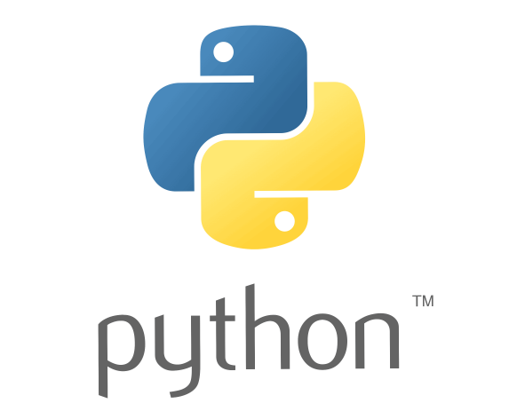
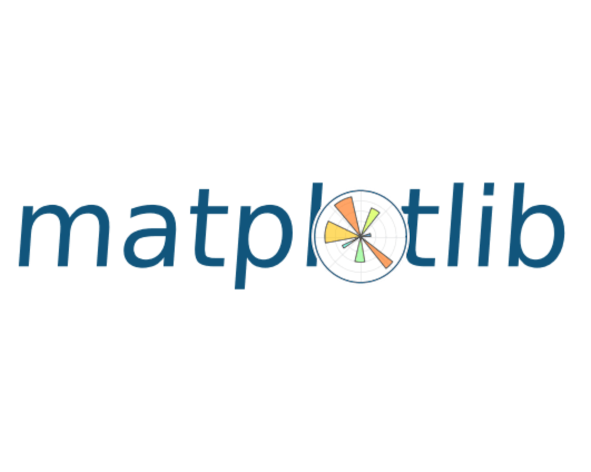
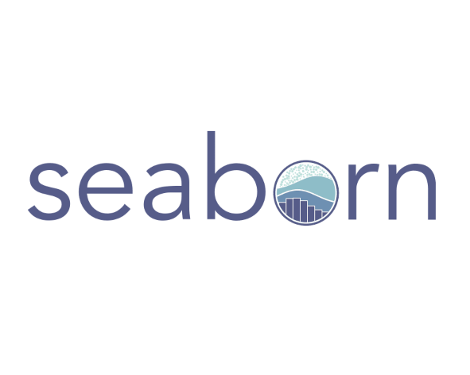
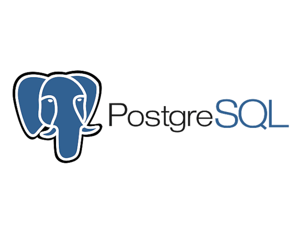
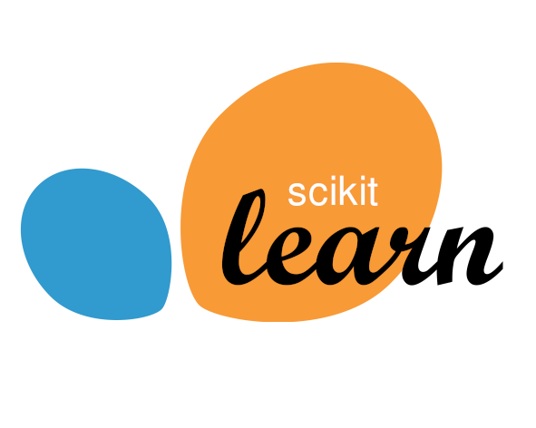
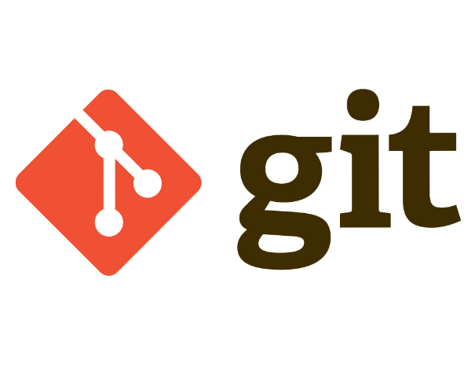
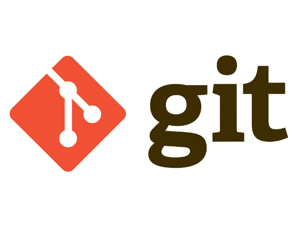

Jason Martinez
Especialista en análisis y visualización de datos.
Ayudo a empresas a analizar y visualizar sus conjuntos de datos.
Perfil
Analista de Datos | Especialista en Medición de Productividad y Automatización de Procesos | Business Intelligence | Formador de formadores | Atracción de talento · Retención de personal | Supply chain
Con más de 7 años de experiencia en el sector financiero, soy un Analista de Datos apasionado y proactivo, especializado en optimizar la medición de la productividad y automatizar procesos operativos para impulsar la eficiencia empresarial.
Experiencia Actual:
Cruz Verde | Analista Senior de Datos | Business Intelligence | Implementador de proyectos
Desempeñé un papel crucial como Analista Senior en la correcta medición de la productividad de diversos negocios, implementando proyectos clave como Digiturno y WFM. Mi enfoque se centró en la automatización de procesos operativos para maximizar la eficiencia.
Experiencia Prevía:
Scotiabank Colpatria, Citibank, Banco de Bogotá, Cardif, Seguros Alfa, Claro, Thomas Greg and Sons
A lo largo de mi trayectoria, ocupé diversas posiciones en el sector financiero, desde soporte técnico para la banca virtual empresarial hasta roles en cobranzas, ventas, retención de seguros y gestión humana. Esta variada experiencia me proporcionó una comprensión integral de la industria y una capacidad única para abordar desafíos desde diversas perspectivas.
Mi objetivo es aplicar mi experiencia diversa y habilidades analíticas para impulsar el éxito empresarial. ¡Conéctemos y exploremos oportunidades para colaborar!
Habilidades Técnicas
Mis proyectos laborales y personales son diversos y varían según los objetivos establecidos. En Cruz Verde, participé en la creación de una amplia gama de herramientas para los proyectos utilizando las aplicaciones de Office 365. Algunos ejemplos incluyen Power Virtual Agent, SharePoint, Forms, One Note, Planner, OneDrive, chat bots personalizados en Teams, Project, Publisher, Stream, y Visio para el mapeo de procesos. También realicé la automatización de procesos en Power Automate y utilicé Excel, PowerPoint y Word.
Para la presentación y visualización de los resultados obtenidos del correcto tratamiento de los datos, utilicé tableros de control con Power BI y Looker Studio.
Durante la fase de ETL me apoyo usando un ambiente de desarrollo Linux, empleando librerías del lenguaje de programación de Python como Matplotlib y Seaborn, para la visualización de datos.
  Para el tratamiento de datos, utilicé ambientes Linux o, directamente desde Windows, el editor de código Visual Studio Code, junto con las librerías Pandas, Numpy y PostgreSQL.
Para los análisis de pronósticos, me apoyé en Scikit-learn, una librería especializada en machine learning, obteniendo resultados de regresiones lineales, regresión logística, random forest y clustering.
Además, quiero confirmar que he creado esta página utilizando el editor de código Visual Studio Code. Para su desarrollo, he empleado los lenguajes de programación HTML5, CSS, JavaScript y D3. Asimismo, he gestionado las versiones del proyecto con Git y administrado el repositorio en GitHub.
 

Portafolio
¡Bienvenidos a mi sección de proyectos! Aquí encontrarán una diversidad de proyectos que he desarrollado en las áreas de Data Analytics, Data Science y Data Engineering. Cada proyecto es el resultado de un análisis exhaustivo y la aplicación de diversas técnicas y herramientas, utilizando conjuntos de datos públicos. Estos proyectos reflejan mi compromiso con la excelencia y la innovación en el campo del análisis de datos. ¡Disfruten explorando!
Data Scientist

- Modelo KPCA: Optimizando la Reordenación de Compras en Línea en EE.UU.
- PCA vs IPCA: Comparando Modelos en la Optimización de la Reordenación de Compras en Línea en EE.UU.
-
 Regresión Lineal: Prediciendo Calorías a partir del Consumo de Café en Starbucks
Regresión Lineal: Prediciendo Calorías a partir del Consumo de Café en Starbucks
- Cluster: Análisis de Diamantes Utilizando K-Means y Mean-Shift para la Segmentación del Mercado
- Estimadores: Comparación de Precisión entre Bagging y Boosting en un e commerce
-
 Optimización Paramétrica: Evaluación y Ajuste de Modelos de Regresión con Cross Validation y RandomizedSearchCV
Optimización Paramétrica: Evaluación y Ajuste de Modelos de Regresión con Cross Validation y RandomizedSearchCV
-
 Regresión Robusta: Evaluación de SVR, RANSAC y Huber en la Predicción de Precios de Ventas Inmobiliarias
Regresión Robusta: Evaluación de SVR, RANSAC y Huber en la Predicción de Precios de Ventas Inmobiliarias

Análisis en Profundidad
En mis dos recientes posiciones laborales, he trabajado en proyectos orientados al ahorro y la mejora continua de los procesos.
✅ En Scotiabank, participé en la creación de un tablero de control para el área de cobranzas. Este tablero, desarrollado en Power BI, permitía monitorizar la calidad de las llamadas de cada asesor y publicar sus indicadores y oportunidades de mejora, facilitando así un servicio de alta calidad.
✅ En Cruz Verde, desarrollé dos proyectos significativos. El primero consistió en medir eficazmente la productividad de todas las unidades de negocio, tanto en retail como en dispensación. Este proyecto implicó la recolección de información de diversas áreas, la limpieza de datos (como ausentismos, horas extra, recargos nocturnos, planta activa, planta faltante) y la correcta agrupación de las bases para visualizar los resultados. Dada la gran cantidad de información, tuve que aplicar técnicas de big data.
✅ El segundo proyecto fue la creación de una página web y un chatbot como asistente personal, principalmente para los auxiliares de droguería, pero también útil para cualquier colaborador que decidiera utilizarlo. Este asistente personal estaba seccionado con los temas que generaban más dudas en las diferentes áreas. Cuando el asistente no tenía la respuesta, dirigía a la persona al experto correspondiente. Además, el chat indicaba al auxiliar qué campaña de ventas se estaba implementando en el día y le recomendaba, según su cédula de usuario, qué productos podría ofrecer para aumentar las ventas. Este proyecto permitió la integración de diferentes áreas que estaban aisladas, definir personas de cada área para que pudieran estar al tanto de la información y establecer reuniones periódicas entre todos para una mejora continua.

Nuestra solución a un clic
Adéntrate en el futuro de la comunicación digital. Descubre nuestro innovador Chatbot, una maravilla de la inteligencia artificial diseñada para transformar la interacción en línea. Este proyecto es un testimonio de nuestra pasión por la tecnología y nuestra dedicación a la mejora continua. ¡No te pierdas esta revolución en la comunicación!
Ver proyectoCertificaciones y Educación
Mi trayectoria educativa se compone de:
Testimonios
Andrea Rodriguez
Coordinadora
“Jason es bastante hábil trabajando con personas, su inteligencia e integridad son realmente destacables.”
Ruth Vasquez
Gerente
“Jason destaca por su excepcional habilidad para el análisis crítico, una cualidad tan infrecuente que es comparable a hallar una aguja en un pajar.”
Steve Agudelo
Coordinador
“El carácter de Jason es firme y constante, sin importar las dificultades que enfrenta.”
Contacto
Si tienes alguna pregunta, sugerencia o simplemente quieres ponerte en contacto conmigo, no dudes en hacerlo. Aquí te dejo algunas formas de contactarme:
Puedes enviarme un correo a jasonmartinez1994@hotmail.com intentaré responder lo más pronto posible..
/jasondanielmartinezcastro/
/Lordjasonmartinez